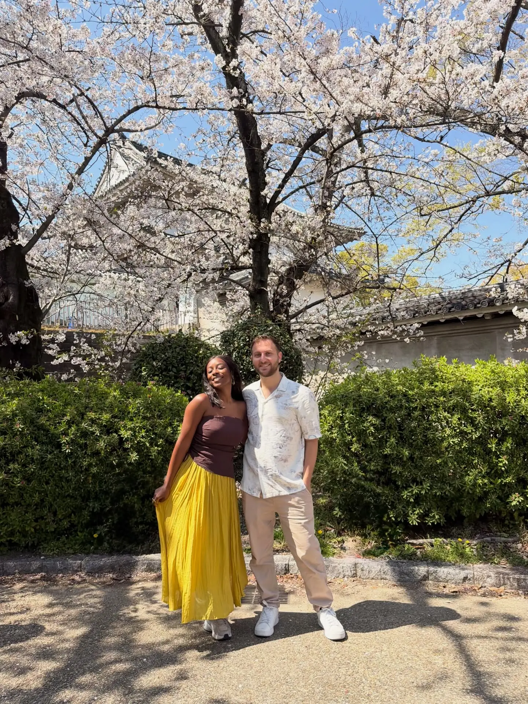
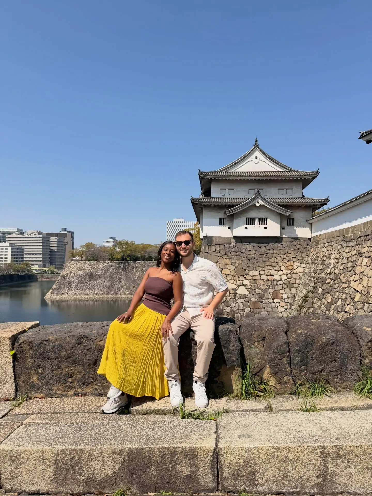

Osaka · Most iconic01
Osaka Castle
📍 Osaka Castle Park
Our first taste of Japan in bloom, and what a place to start — the castle's white-and-gold keep rising over stone ramparts and a moat, the whole park foaming with cherry blossom. We climbed the keep for the city view (there's a museum inside), then just wandered the grounds. Book the admission ticket ahead to skip the queue at the tower.
Climb the keepGo for the blossoms